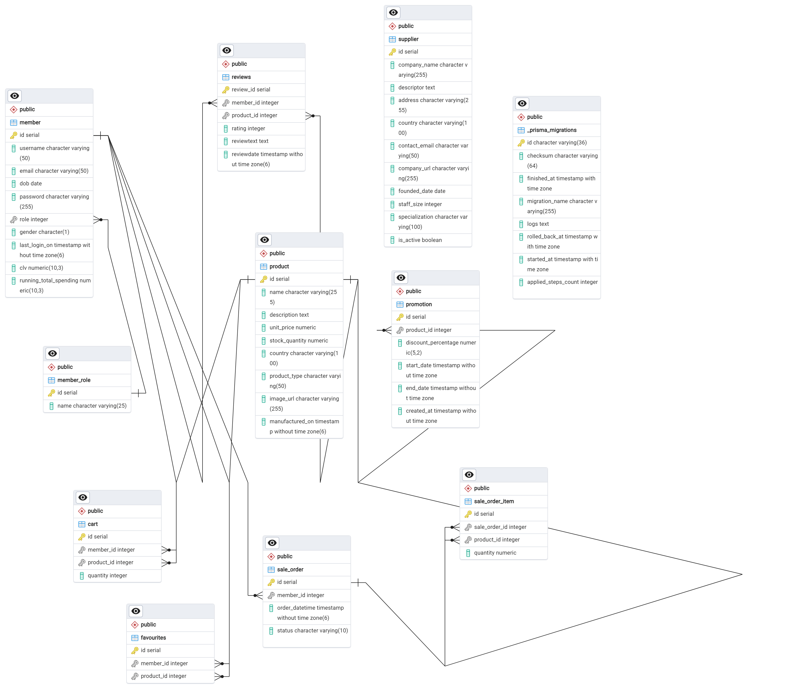

E-Commerce Database & Web Application
This project involved designing and implementing a full-stack e-commerce system with a strong emphasis on database design, performance optimisation, and transaction management. I extended an existing web application by building robust backend features that support real-world shopping workflows such as cart management, checkout processing, promotions, and order tracking.
The system was designed to be scalable, secure, and efficient, reflecting how modern e-commerce platforms manage data consistency and user interactions. Built using PostgreSQL as the database management system, I focused on translating business requirements into structured database solutions while building end-to-end features that integrate database, backend, and frontend layers.
📊 Database Schema Design
The database schema was designed with normalisation principles to support core e-commerce operations. The Entity-Relationship Diagram (ERD) below illustrates the complete database structure:

The schema includes entities for members, products, suppliers, shopping carts, sale orders, promotions, and reviews, with carefully defined relationships to maintain data integrity and support efficient querying.
🔧 What I Built & Implemented
1. Database Design & Entity Modelling
I designed and implemented a normalised relational database schema to support core e-commerce operations. This included entities such as:
- Members and roles
- Products and suppliers
- Shopping carts
- Sale orders and order items
- Promotions and reviews
I carefully defined primary keys, foreign keys, constraints, and relationships to maintain data integrity and reduce redundancy. The database was built using PostgreSQL, and Prisma ORM was used to manage schema migrations and enforce consistency between the database and application logic.
2. Shopping Cart Management (CRUD Operations)
I implemented complete CRUD functionality for shopping carts:
- Add single or multiple products to a cart
- Update item quantities (including bulk updates)
- Remove individual or multiple items
- Retrieve cart contents with a real-time cart summary
All cart operations were member-scoped, ensuring users could only access and modify their own data. Backend validation and error handling were implemented to prevent invalid updates and ensure a smooth user experience.
3. Checkout & Transaction Management
To simulate real-world checkout behaviour, I developed a stored procedure (place_orders) that processes cart items within a controlled transaction:
- Deducts stock only when sufficient inventory is available
- Creates sale orders and sale order items
- Removes successfully processed items from the cart
- Returns a list of items that could not be processed due to insufficient stock
The procedure was designed to avoid full transaction rollback, allowing partially successful checkouts—mirroring real commercial systems. I also implemented transaction anomaly testing to demonstrate a phantom read, showcasing my understanding of isolation levels and concurrency issues.
4. Promotions & Dynamic Pricing
I added a promotions feature that allows products to have time-based discounts. During cart retrieval:
- Active promotions are automatically applied
- Discounted prices are calculated server-side
- Cart summaries reflect total quantity, total price, and total discount
This demonstrated my ability to implement business logic at the backend level while keeping the frontend lightweight.
5. Admin Sale Order Dashboard
For administrators, I built a sale order dashboard that supports:
- Searching and filtering by order status, date range, item quantity, and price
- Sorting results by earliest or latest orders
- Viewing detailed order and product information
All filtering and sorting logic was implemented using ORM-based queries, ensuring maintainable and secure database access.
6. Query Optimisation & Indexing
To improve database performance, I analysed common supplier queries and implemented multiple indexes, including:
- Single-column indexes (e.g. country, company name)
- Composite indexes (e.g. country + active status)
I measured query execution times before and after indexing, demonstrating tangible performance improvements and reinforcing my understanding of query optimisation strategies.

💡 Key Technical Skills Demonstrated
- Relational Database Design & Normalisation
- PostgreSQL Database Management
- SQL & Stored Procedures
- Transaction Management & Concurrency Control
- Prisma ORM & Schema Migrations
- Backend Development (Node.js, Express)
- RESTful API Design
- Performance Optimisation & Indexing
- Error Handling & Validation
- Frontend Integration with Backend APIs
- Git & Version Control
🎯 What This Project Shows About Me
This project highlights my ability to:
- Translate business requirements into structured database solutions
- Build end-to-end features that integrate database, backend, and frontend layers
- Think critically about data integrity, performance, and real-world edge cases
- Apply academic concepts to practical, industry-relevant systems
It reflects my strong interest in backend development, data engineering, and system design, and my commitment to writing clean, maintainable, and scalable code.